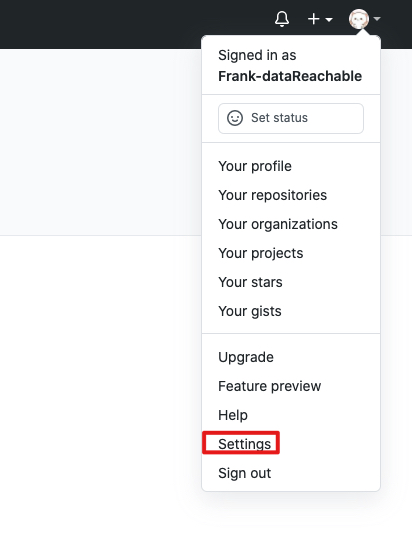
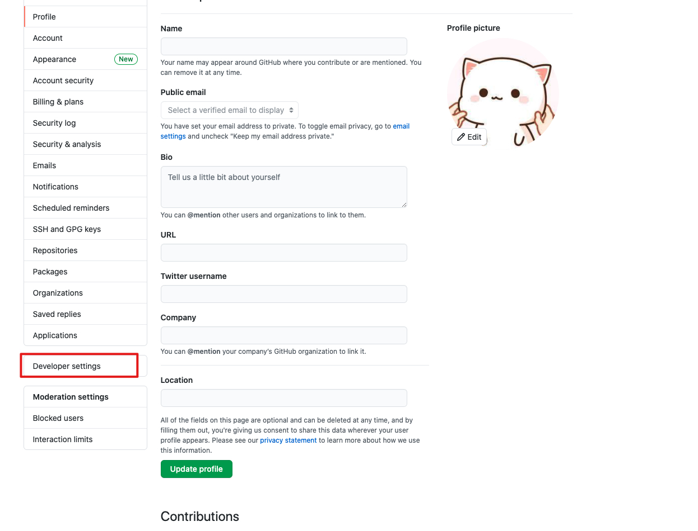
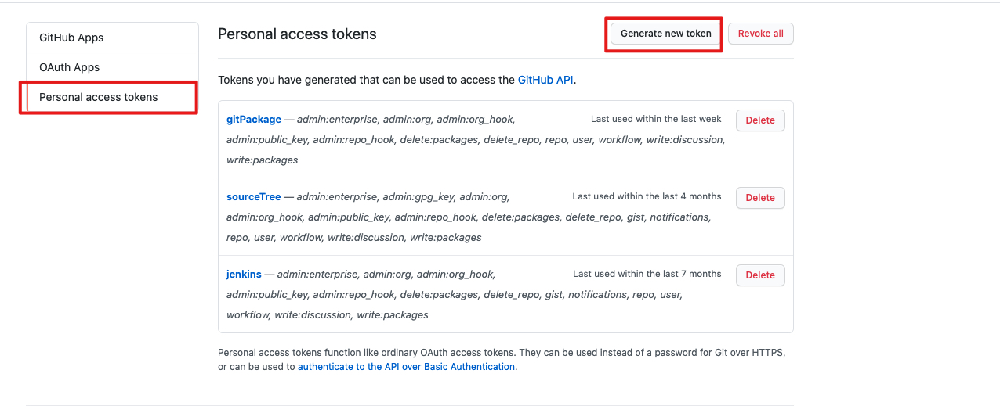
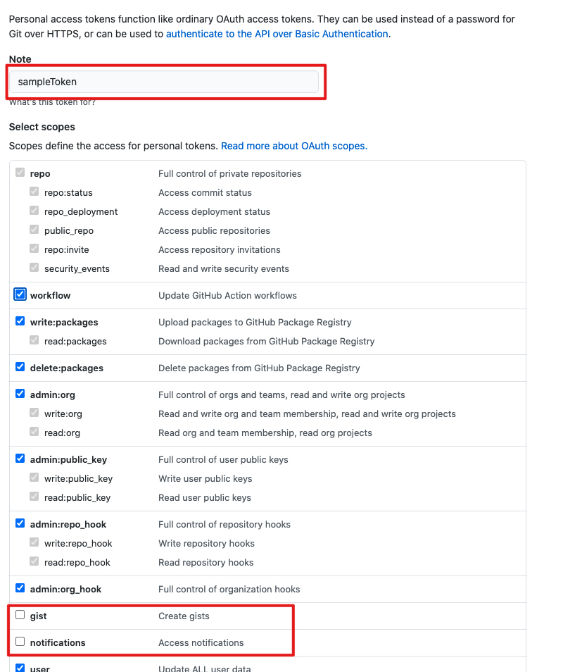
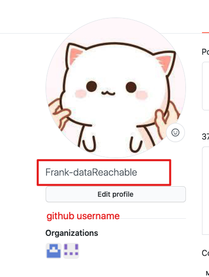

前端项目规范
描述
该文件是前端项目规范文件，主要包含了前端项目介绍和如何配置项目环境和运行项目。
项目结构总览
ProjectSample/ .................... 项目目录
├─ public/ ........................ 项目静态文件根目录
│ ├─ favicon.ico ................. 项目 Favicon
│ ├─ icon.png .................... 项目 Icon
│ ├─ index.html .................. 项目生成环境 HTML 文档
│ └─ indexDev.html ............... 项目开发环境 HTML 文档
├─ src/ ........................... 项目根目录
│ ├─ global.d.ts ................. Typescript 第三方包声明文件
│ ├─ index.tsx ................... 项目index文件
│ ├─ Components/ ................. 项目公有组建根目录
│ │ ├─ index.ts ................. 整合项目公有组建出口文件
│ │ └─ PublicComponentA/ ........ 项目公有组建A目录
│ │ ├─ index.tsx ............. 项目公有组建A入口文件
│ │ └─ style.scss ............ 项目公有组建A样式文件
│ ├─ PageLayouts/ ................ 项目页面布局根目录
│ │ ├─ index.ts ................. 整合项目页面布局出口文件
│ │ └─ LayoutA/ ................. 项目页面布局A根目录
│ │ ├─ index.tsx ............. 项目页面布局A入口文件
│ │ └─ style.scss ............ 项目页面布局A样式文件
│ ├─ Pages/ ...................... 项目页面根目录
│ │ └─ PageA/ ................... 项目页面A根目录
│ │ ├─ index.tsx ............. 项目页面A入口目录
│ │ ├─ style.scss ............ 项目页面A样式文件
│ │ └─ Components/ ........... 项目页面A私有组建根目录
│ │ └─ PrivateComponentA/ . 项目页面A私有组建根目录
│ │ ├─ index.tsx ....... 项目页面A私有组建入口文件
│ │ └─ style.scss ...... 项目页面A私有组建样式文件
│ ├─ Route/ ...................... 项目路由根目录
│ │ └─ index.tsx ................ 项目路由文件
│ └─ Store/ ...................... 项目store根目录
│ ├─ rootReducer.ts ........... Reducer根文件，整合所有reducer
│ ├─ rootSaga.ts .............. Saga根文件
│ ├─ rootStore.ts ............. Store根文件
│ └─ moduleA/ ................. ModuleA根目录
│ ├─ actionTypes.ts ........ ModuleA Action Types 文件
│ ├─ actions.ts ............ ModuleA Actions 文件
│ ├─ reducer.ts ............ ModuleA Reducer 文件
│ └─ sagas.ts .............. ModuleA异步请求统一管理文件
├─ webpackConfig/ ................. Webpack根目录
│ ├─ webpack.common.js ........... Webpack通用配置文件
│ ├─ webpack.dev.js .............. Webpack开发环境配置文件
│ └─ webpack.prod.js ............. Webpack生成环境配置文件
├─ .babelrc ....................... Presets 和 Plugins 配置文件
├─ .eslintignore .................. ESLint忽略配置文件
├─ .eslintrc.js ................... Typescript语法检测配置文件
├─ .prettierrc.js ................. 代码格式化配置文件
├─ package.json ................... package.json
├─ postcss.config.js .............. 项目postcss配置文件
└─ tsconfig.json .................. typescirpt编译规范配置文件。
Public 文件夹
公用文件夹主要包含项目中的一些静态文件，例如，项目的图标，一些本地图片和项目中 html 的根文件。
Src 文件夹
src 文件夹主要包含项目的入口文件，包括项目中的所有样式文件，功能文件，异步请求文件和页面路由管理文件。
使用方法
本地环境需求
该项目要求 React 的最低版本为 16.13.0，因此，在使用前应安装基本的 NPM 软件包。
下面的步骤是假设使用者已经安装了 node 和 npm，如果没有安装 node 和 npm,请通过install node and npm进行安装。
安装所有必要的 npm 包到你的项目中去
请运行下列代码来安装所需的 npm 包
npm install
配置 ESLint 和 Prettier 来规范化你的工作
为了使开发人员获得良好的开发体验，将编辑器设置为在保存文件时自动运行 ESLint 的自动修复命令很有用。 请按照以下方法操作来配置你的 vscode：
在 Windows/Linux 上 - File > Preferences > Settings > Extensions > Scroll down and find "Edit in settings.json"
在 macOS 上 - Code > Preferences > Settings > Extensions > Scroll down and find "Edit in settings.json"
您也可以从命令面板打开“设置”编辑器 (⇧⌘P)所带有的首选项: 打开设置或使用键盘快捷键 (⌘,), 或者通过 User and Workspace Settings 来获取更多的信息.
现在，您应该有一个打开的文件来执行它。 如果您不想每次都手动格式化文件，也可以在保存时对其进行格式化。 因此，您需要以 JSON 格式打开 Visual Studio Code 用户的设置/首选项，并配置以下内容：
{
"editor.codeActionsOnSave": {
"source.fixAll.eslint": true
},
"editor.formatOnPaste": true,
"editor.formatOnSave": true,
"eslint.validate": [
"javascript",
"javascriptreact",
"typescript",
"typescriptreact",
"scss"
],
}
配置 Github personal accesstoken 来确保项目获取公司私有组件库
在 github 中创建自己的 personal access token
- 点击 github 中的头像图表选择
settings选项 \ - 在左边的菜单栏中选择
Developer settings选项 \ - 随后选择
Personal access tokens,然后点击Generate new token按钮 \ - 输入 Token 名称，然后选中除了
gist和notifications的所有选项后点击Generate token按钮\ - github 生成了 token 请妥善保存，只会出现一次，如果下次想要再次使用 personal accesst token 则需要重新创建一个 token

- 点击 github 中的头像图表选择
用 personal access token 登陆账号
- 打开 terminal
- 输入
npm login --registry=https://npm.pkg.github.com然后按回车 - username 中输入你的 github username, 用户名不分大小写\
- 密码为刚刚生成的 personal access token，复制粘贴即可
- email 为账号注册时候的 email 地址
- 登陆成功
在登陆成功以后就在公司的私有项目中获取相关的 npm 私有包，否则无法进行包的安装等
运行项目
在控制台输入下列指令来运行项目
npm run start